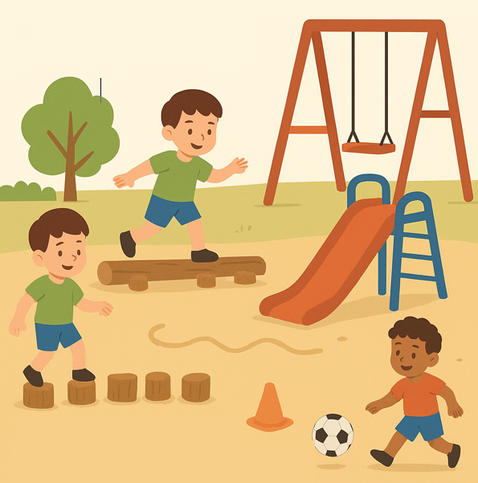
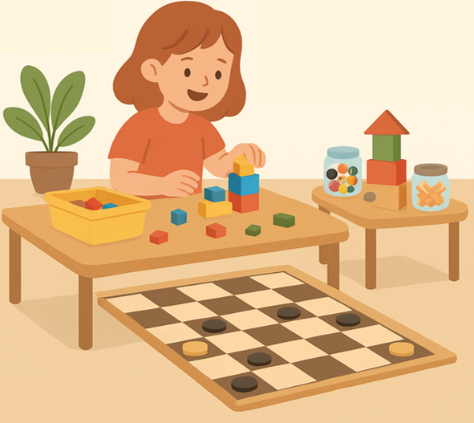
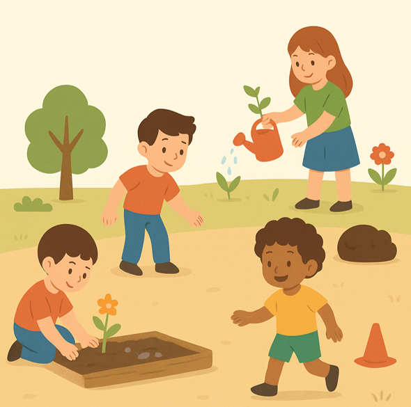

Universidad Tecnológica del Perú
Facultad de Educación
Práctica Educativa I: Psicomotricidad para Educación Primaria
Sección 31960
Aaron Sixto Callupe Llallico
Estudiante de Educación Primaria
Semana 3 - Actividad 2
Diseñando el patio de mis sueños

Zona de Motricidad Gruesa
- Columpios, barras y resbaladeras.
- Circuito de equilibrio (líneas en el suelo, troncos de madera o bancos).
- Espacio abierto para juegos con pelota (fútbol, vóley, básquet).
👉 Habilidades trabajadas: equilibrio dinámico, coordinación, fuerza, velocidad y trabajo en equipo.

Zona de Motricidad Fina
- Mesas con materiales reciclados (legos, bloques de madera, tapas, palitos).
- Juegos de mesa gigantes (ajedrez o damas pintadas en el piso).
👉 Habilidades trabajadas: coordinación ojo-mano, precisión, creatividad, concentración.

Rincón Sensorial
- Jardín escolar para plantar y cuidar flores o vegetales.
- Caja de arena o mesa sensorial con materiales variados (semillas, piedras, agua).
👉 Habilidades trabajadas: exploración sensorial, motricidad fina, relajación y vínculo con la naturaleza.